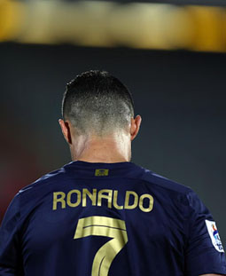

Curriculum Vitae

Menú
Resumen
-
Cristiano Ronaldo nació el 5 de febrero de 1985 en Santo António, un
barrio de Funchal, Isla de Madeira, Portugal.
-
Hijo menor de María Dolores dos Santos y del jardinero municipal José
Dinis Aveiro, que lo bautizó con el nombre de Ronaldo en homenaje al
político y actor estadounidense Ronald Reaga
-
Tuvo un hermano mayor, Hugo, y dos hermanas también mayores, Elma y
Liliana Cátia. Su bisabuela Isabel da Piedade era de Cabo Verde.
-
Su familia tiene raíces firmemente católicas y Ronaldo declaró que
vivían en la pobreza teniendo que compartir habitación con su hermano y
hermanas.
Volver